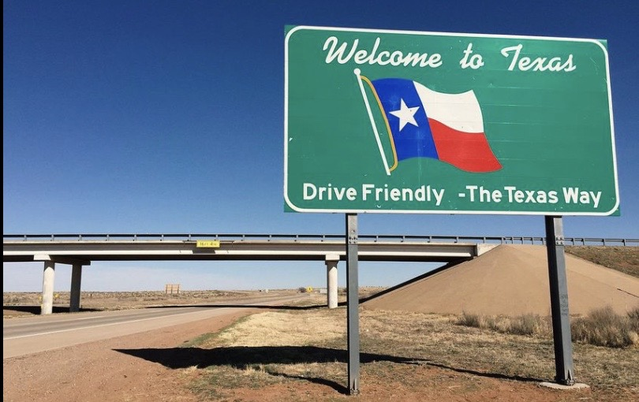
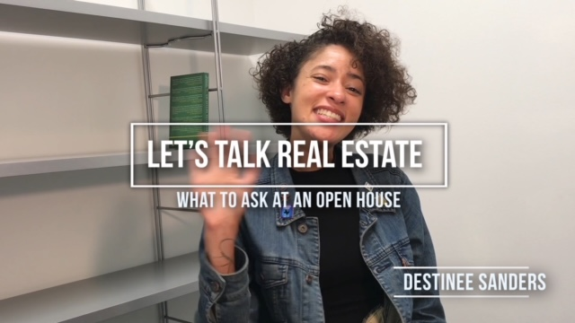
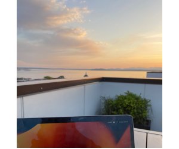

I was born in the Friendliest state of Texas or as we natives call it Tejas. I was raised in Dallas. I graduated from the Science and Engineering High School where I was first formally taught the programming language Java. Upon graduation I went on to finish my Associates in Engineering at Richland College. My journey later took me from studying Software Engineering and Cognitive Science at The University of Texas at Dallas to studying Software Engineering virtually at Arizona State University while flying around the world as a flight attendant.
As I came to an end of my Bachelor's program I realized I had a cross of passion and interest in real estate. I understood even a software engineer had to pay a realtor and wanted to learn more. I switched my major to Liberal studies to merge my interests in Engineering with my interests in human development and sustainability. I went on to move back to Texas and get my Real Estate license in 2017.
I could write code and engineer complex problems, which was great, until I entered the Real Estate industry and realized talking with people, building relationships, and maintaining those relationships is most important.
I enrolled to study in the Master of Liberal Studies program at the Annette Caldwell Simmons School of Education and Human Development at Southern Methodist University in Dallas, Texas. Here I participated in courses on The Human Experience, Organizational Strategy, and Coaching within organizations. I had the opportunity to take a course on Dispute Resolution and Human Rights where we studied abroad in Italy. The course that changed my life I completed in 2020 and it was led by Dr. Jennifer Parvin on Emotional Intelligence.

While studying for my Masters, I worked as a Realtor, Substitute Teacher, and even took a contract job working for 7Now a 7Eleven company as a Operations and Fulfillment Analyst. I graduated in 2020 in the middle of the Pandemic and moved back to Seattle. I obtained my Washington Real Estate License and began working for Redfin as an Associate Agent for a year then was promoted to Licensed Listing Coordinator. After a round of Layoffs I found myself taking a break from real estate and looking to connect back with the Tech industry. First I obtained a part-time job as a Kids Coding Instructor at Coding With Kids.

Then, I obtained a contract position with Amazon as a Recruiting coordinator and was let go in their first round of layoffs. Grateful, this led me to Code Fellows where I now work as an Admissions Coordinator.
My big goals for 2023 include completing the Code Fellows full-stack developer courses, purchasing my first property, and visit a new continent. I am excited for what the future holds.